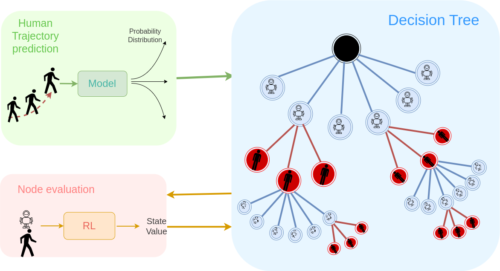

Paper Code Video


Real-world experiment showcasing the robot's ability to follow a human from the front while avoiding obstacles. The figure illustrates an example of the tree expansion process, with blue and red arrows representing the potential moves for the robot and human, respectively. The robot expands the tree and selects nodes that allow it to maintain a position in front of the human, while eliminating branches that could lead to collisions with obstacles.
Tree expansion in MCTS: Blue nodes represent possible future positions of the robot, while red nodes indicate potential future positions of the human. The letters "L", "R", "S", and "F" on the edges of the tree represent the actions: Left, Right, Straight, and Fast, respectively.
Abstract
This paper addresses the challenge of robot follow ahead applications where the human behavior is highly variable. We propose a novel approach that does not rely on single human trajectory prediction but instead considers multiple potential future positions of the human, along with their associated probabilities, in the robot’s decision-making process. We trained an LSTM-based model to generate a probability distribution over the human’s future actions. These probabilities, along with different potential actions and future positions, are integrated into the tree expansion of Monte Carlo Tree Search (MCTS). Additionally, a trained Reinforcement Learning (RL) model is used to evaluate the nodes within the tree. By incorporating the likelihood of each possible human action and using the RL model to assess the value of the different trajectories, our approach enables the robot to effectively balance between focusing on the most probable future trajectory and considering all potential trajectories. This methodology enhances the robot's ability to adapt to frequent and unpredictable changes in human direction, improving its navigation and ability to navigate in front of the person.
Approach
In this paper, we present an algorithm designed for a mobile robot to follow a human while accounting for the dynamic nature of human movement, rather than assuming that the human has a fixed goal point. Given that humans frequently change direction, the algorithm considers a range of possible future actions for both the robot and the human. The robot is designed to evaluate the most promising and probable moves and future positions of both the human and itself a few time steps ahead, ultimately selecting the optimal action for the current time step. The algorithm is structured into three key modules: (i) Decision tree: A module that takes the poses of both the human and the robot as inputs. It expands the tree by considering various potential actions for both the robot and the human, ultimately generating the optimal action for the robot. (ii) State evaluation: A module that assigns a value to each node during tree expansion. Nodes with higher values indicate that the robot and human are in a more desirable relative position. (iii) Human future positioning probabilities: This module estimates the likelihood of different future human positions for each human node during tree expansion. This helps the algorithm to better anticipate and adapt to realistic human behavior in real-world scenarios.

In this work, Monte Carlo Tree Search (MCTS) is employed to determine the optimal action for a robot to follow a human from the front. The algorithm involves four key steps: selection, expansion, simulation, and backpropagation. In the selection stage, the process starts at the root node, representing the current poses of the human and the robot. From this point, the algorithm computes the Upper Confidence Bound (UCB) value for each child node and selects the child with the highest value, continuing this selection process until it reaches a leaf node. In this work, we modified the standard UCB approach by incorporating the probability of selecting each node. The parameters involved in the UCB equation include the value of each node $(V)$, the number of times a node $(n)$ and its parent $(n_p)$ have been selected, and the probability of selecting a node $(P)$. The value of each node is derived from the state evaluation module (RL model), while the probability is obtained from the human future positioning probabilities module (LSTM). During the expansion stage, all possible next states for each action are simulated. If the selected leaf node is a robot node (blue node), the algorithm uses the human's actions and, if it is a human node (red node), it uses the robot's actions. In the evaluation stage, newly added leaf nodes are first assessed for safety to ensure they do not result in collisions with obstacles or the human. If a leaf node directs the robot toward an unsafe region, the algorithm removes that node from the tree and stops further expansion from that branch. Once safety is confirmed, the leaf nodes are evaluated using the state evaluation module. In this module, all the leaf nodes—both human and robot—are passed through the trained RL model to assign a value to each node. This value reflects how the robot's pose is close to the desired pose in relation to the human. In other words, the closer the robot is to being directly in front of the human at a certain distance, the higher the value assigned to the node. Afterward, the human-related nodes are processed through the human future positioning probabilities module. This module assigns a probability to each human node based on the history of the human's positions over the past 3 seconds. It's important to note that all the robot nodes are assigned an equal probability of 1/6, where 6 represents the number of actions for the robot. Finally, In the backpropagation stage, the value obtained for each leaf node is propagated back through the tree, updating the values of all parent nodes up to the root node. At the end of expansion, which occurs over a $0.2$s interval, the immediate child node with the highest visit count $(n)$ is selected as the optimal action for the next time step. The algorithm then updates with the new poses of the human and robot and re-expands the tree for the subsequent time step.
Experiments
Sudden changes in human trajectory
The purpose of this experiment is to simulate scenarios where a human suddenly changes direction, a common occurrence in real-world situations.


Comparison of robot trajectories between the proposed algorithm and the previous method. (i) The left image shows the human and robot trajectories using the proposed algorithm, achieving $0.17$ rad mean angle, (ii) the right image displays the trajectories using the previous method, achieving $0.71$ rad mean angle. The rainbow color scale indicates the time dimension, with red and purple denoting the first and last time steps, respectively.
Comparison of robot trajectories between the proposed algorithm and the previous method. (i) The left image shows the human and robot trajectories using the proposed algorithm, achieving $0.37$ rad mean angle, (ii) the right image displays the trajectories using the previous method, achieving $0.48$ rad mean angle. The rainbow color scale indicates the time dimension, with red and purple denoting the first and last time steps, respectively.
BibTeX
If you find this work useful for your research, please cite:
@inproceedings{X,
title={An MCTS-DRL Based Obstacle and Occlusion Avoidance Methodology in Robotic Follow-Ahead Applications},
author={Leisiazar, Sahar AND Park, Edward AND Lim, Angelica AND Chen, Mo},
booktitle={IEEE/RSJ International Conference on Intelligent Robots and Systems (IROS)},
year={2023},
}